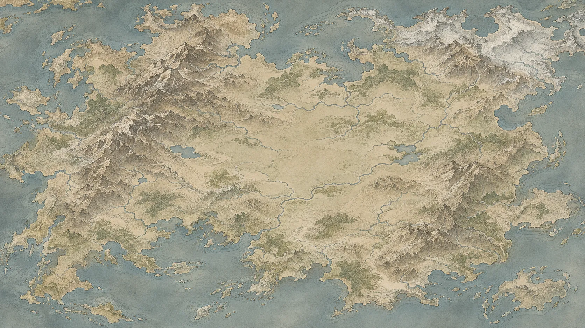

拓扑量子物态概念图
当前路线：arXiv 2610.27436v1。底图只是装饰，位置没有含义。
线性代数
量子力学
固体物理
对称性
核心概念
拓扑基础
矩阵与向量
本征值与本征向量
厄米矩阵
幺正变换
量子态
哈密顿量
本征态与能级
对易关系
绝热演化
晶格与周期性
布洛赫定理
能带与能隙
布里渊区
绝缘体与金属
紧束缚模型
时间反演对称性
粒子-空穴对称性
手征对称性
SSH 模型
Berry 相位与 Berry 曲率
陈数
体-边对应
拓扑绝缘体
连续形变
拓扑不变量
绕数
1
2
你在这里
我的批注：Γ 的定义和教材不一样？回头再看。
图例
确认懂了：实心
讲过：只有轮廓
仍不确定：带黄色问号
还没碰过：小而半透明
细线：概念之间的联系
粗线：这篇论文走过的路
本篇路线
1
问题与杂质模型，已讲
2
拓扑与谱的诊断，正在读
3
单杂质基线
4
随机杂质与相边界
5
有限尺寸与临界参数
6
结论与后续问题
继续
编辑地图
讲过的概念
效果图。三角的状态和进度是示意数据，不是真实的阅读记录。